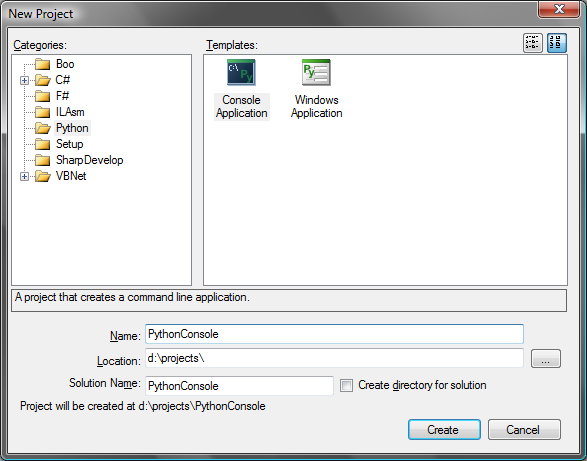
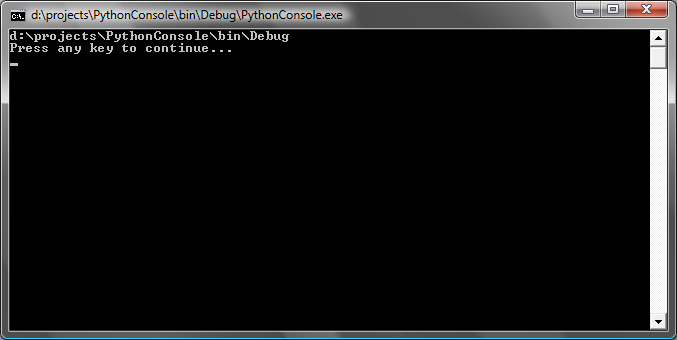

Here is a short walkthrough on how to use the Python Standard Library with SharpDevelop 3.0 and IronPython 2.0.
You will need to have SharpDevelop 3.0 and Python 2.5 installed on your machine. These can be downloaded from the following locations.
Note that using Python 2.6 is not supported. The following section assumes that Python 2.5 was installed into the C:\Python25 folder.
First we will create an IronPython console application in SharpDevelop. From the File menu select New and then Solution. In the New Project window select the Python category and select the Console Application template.

Give the project a name, select its location and click the Create button.
To use the Python Standard Library the project needs a reference to IronPython.dll, which should be added by default, and a reference to IronPython.Modules.dll. Open the Projects window, if it is not already open, by selecting Projects from the View menu. Right click the project's references and select Add Reference. In the Add Reference dialog first add a reference to mscorlib, this reference is only needed since we are going to use the System.Console class to pause the console output. Then select the .NET Assembly Browser tab and click the Browse button. Locate the IronPython.Modules.dll file and select it. This file should be in the following folder:
C:\Program Files\SharpDevelop\3.0\AddIns\AddIns\BackendBindings\PythonBinding
Click OK to close the Add Reference dialog.
In the Program.py file change the code to the following:
# Add Python Standard Library to search path.
import sys
sys.path.append("c:\python25\lib")
# Use Python Standard Library os module.
import os
print os.getcwd()
# Wait for a key press before closing the console window.
import System
print "Press any key to continue..."
System.Console.ReadKey(True)
The sys.path.append line adds the Python Standard Library to the search path. After that the os module is imported and the os.getcwd method is called to get the current working directory and this is output to the console window. The last three lines of code are just used to pause the console window so we can see the output.
Compile the above code by selecting Build Solution from the Build menu.
Finally run the application by selecting Run from the Debug menu.
